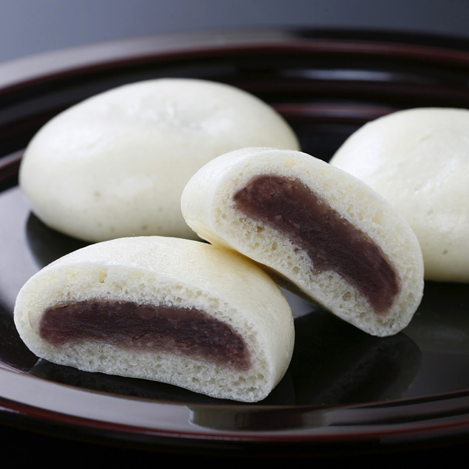

日式甜饅頭

介紹
饅頭（日語：饅頭／まんじゅう），又稱日式甜饅頭，在日本也可以寫為「萬十、萬頭、曼頭」，是一種用甜味麵粉包入紅豆沙，再由蒸籠製作完成的和菓子，日式甜饅頭均擁有甜味，但甜度會根據不同的種類而有較大變化。
作法
材料:煉乳、蜂蜜、低筋麵粉、蛋黃、白豆沙餡
表面裝飾:蛋黃、黑白芝蔴
- 煉乳和蜂蜜先倒在一起，低筋麵粉另外裝，取出一個蛋黃。
- 蛋黃加入蜂蜜煉乳裡面，蛋黃不要全下，要留一點點，之後會用到，低筋麵粉輕輕篩入。
- 蛋黃大概留這樣少少的就可以了，等一下要塗表面做裝飾用的。
- 用橡皮刮刀把所有材料壓成團，或是用手掌壓也行，不要用揉的。
- 成團後，蓋個蓋子或是保鮮膜，放入冰箱冷藏30分鐘，稍微變硬一點比較好操作。
- 趁著麵皮在冷藏的時候，把白豆沙餡分成八份，每個約16g。我這個豆沙餡是用現成市售的。
- 冷藏好的麵皮取出，分成八份，每份約29～30g。
- 白豆沙餡包入麵皮，收口捏緊後，再整成長橢圓狀。
- 全部做好後，在烤盤裡排好，把剛才留下的蛋黃塗在表面，再放一些黑、白芝蔴做裝飾。
- 烤箱預熱170度，預熱完畢後，入爐烤15分鐘。
- 烤好時，整體看起來呈現微金黃色就是完成了。
種類
- 茶饅頭：使用麵粉、黑糖和膨張劑製成的饅頭，甜度極高，配合抹茶食用較佳，又稱為利休饅頭、大島饅頭、溫泉饅頭或薄皮饅頭，在日本的溫泉街中經常能見到。
- 薯蕷饅頭：蕷是芋的和製漢字，使用紫薯粉代替麵粉製成的饅頭，表皮不一定是紫色的，也有可能是粉紅色，又稱為大和蕷、伊勢蕷。
- 酒饅頭：利用酒母和麴發酵麵體製成的饅頭，甜度較低，配合冰水一起食用最美味。
- 炭酸饅頭：明治時代發明的簡便型日式甜饅頭，在麵體中加入蘇打粉發酵，在家庭和工業生產上都非常盛行。
- 鹽饅頭：將經過油炸的栗子磨碎和鹽研磨至粉末狀，再加水乳化後再加入普通麵粉製成麵團，可以捏成楓葉或者小鳥的形狀蒸，顏色為橘紅色，又稱為唐饅頭、紅葉饅頭、栗饅頭、千鳥饅頭或乳菓。
- 葛饅頭：使用葛粉代替麵粉製作成的饅頭，需要冷藏過後才能吃，口感冰涼，又稱為水仙饅頭或葛櫻。
- 麩饅頭：使用小麥粉的麩代替麵粉製成的饅頭，在外面會包裹一層用鹽醃漬的笹的葉子。
- 味噌饅頭：用味噌和紅豆沙餡混合製成的饅頭。